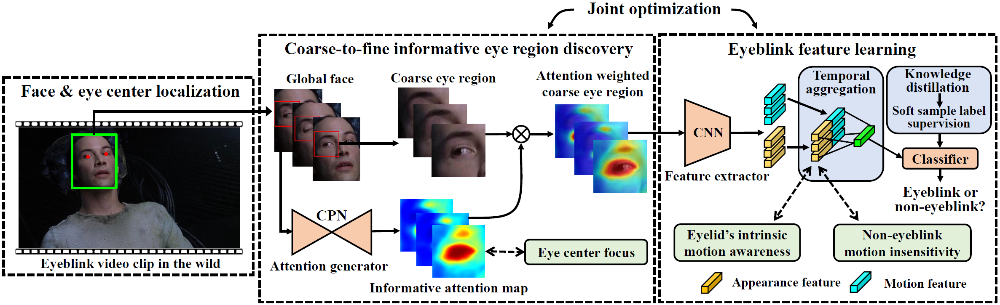
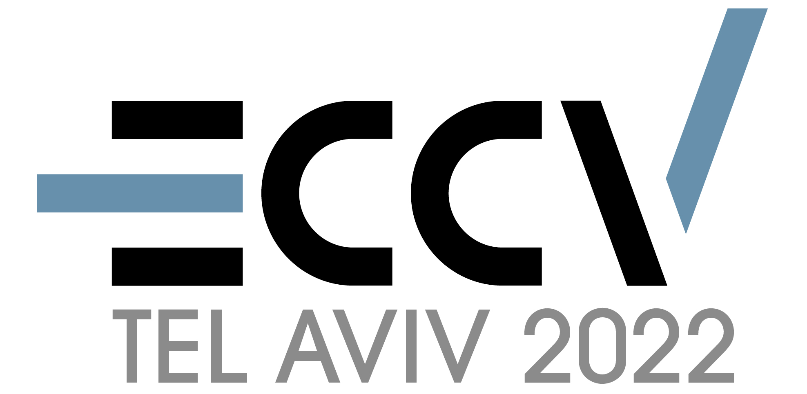

|
Wenzheng Zeng 曾文正 I am a master’s student at the School of Artificial Intelligence and Automation, Huazhong University of Science and Technology (HUST), advised by Prof. Yang Xiao. Before that, I received my bachelor's degree from HUST in 2021. My research interests include machine learning and computer version. Currently, my main research efforts are on eyeblink detection and gaze estimation. I have also participated in several top competitions, primarily focused on video understanding and math modeling. |
{kind=link}
Publications |

|
Real-time Multi-person Eyeblink Detection in the Wild for Untrimmed Video
Wenzheng Zeng, Yang Xiao, Sicheng Wei, Jinfang Gan, Xintao Zhang, Zhiguo Cao, Zhiwen Fang, Joey Tianyi Zhou IEEE/CVF Conference on Computer Vision and Pattern Recognition (CVPR), 2023 project page / paper / video / code |
|  |
Eyelid’s Intrinsic Motion-aware Feature Learning
for Real-time Eyeblink Detection in the Wild
Wenzheng Zeng, Yang Xiao, Guilei Hu, Zhiguo Cao, Sicheng Wei, Zhiwen Fang, Joey Tianyi Zhou, Junsong Yuan IEEE Transactions on Information Forensics and Security (TIFS), 2023 / video / paper / code |
Invited Talk |
|
Invited poster and Spotlight talk at CVPR GAZE2023 workshop.
Topic: Multi-person eyeblink detection in the wild in untrimmed videos |
Competitions |
|  |
The Visual Inductive Priors for Data-Efficient Computer Vision Challenge, ECCV 2022
Obtain 3rd place and Jury Prize in the action recognition track. |
|
China Graduate AI Innovation Competition, 2021
Obtain 3rd place and fisrt prize (3/1505). |
|
 |
Fisheye Video-based Action Recognition Competition at the MMVRAC Workshop, ICCV 2021
Obtain 4th place. |
|
|
The Interdisciplinary Contest In Modeling (ICM), America, 2020.
Obtain Meritorious Winner (9%). |
|
|
The "Challenge Cup" National Competition, 2023.
The competition is ongoing and currently in the semifinals, with the top 50 out of 466 teams. |
|
This website is inspired by Jon Barron's website. Many thanks to him! |